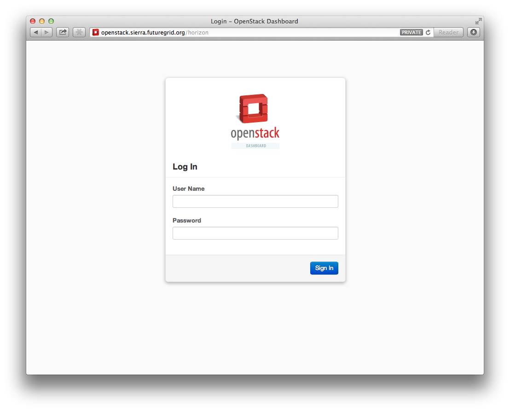

Currently we have OpenStack Grizzly installed on Sierra. To use it you need to first log into sierra and prepare your openstack credentials (Make sure to replace the ‘username’ with your actual FG username):
$ ssh username@sierra.futuregrid.org
Next you need to create your novarc file with our cloudmesh tools:
$ module load cloudmesh
$ cm-manage config sierra-openstack-grizzly
The cm-manage command will create a nova rc file at the default location:
~/.futuregrid/novarc
To activate your your OpenStack environment and load the openstack tools you will need to source the novarc file and load the novaclient module:
$ source ~/.futuregrid/novarc
$ module load novaclient
To check if your nova client works we use a simple command to list the flavors:
$ nova flavor-list
Everything is fine, if you se an output similar to:
+----+-----------+-----------+------+-----------+------+-------+-------------+-----------+-------------+
| ID | Name | Memory_MB | Disk | Ephemeral | Swap | VCPUs | RXTX_Factor | Is_Public | extra_specs |
+----+-----------+-----------+------+-----------+------+-------+-------------+-----------+-------------+
| 1 | m1.tiny | 512 | 0 | 0 | | 1 | 1.0 | True | {} |
| 2 | m1.small | 2048 | 20 | 0 | | 1 | 1.0 | True | {} |
| 3 | m1.medium | 4096 | 40 | 0 | | 2 | 1.0 | True | {} |
| 4 | m1.large | 8192 | 80 | 0 | | 4 | 1.0 | True | {} |
| 5 | m1.xlarge | 16384 | 160 | 0 | | 8 | 1.0 | True | {} |
+----+-----------+-----------+------+-----------+------+-------+-------------+-----------+-------------+
If not your environment may not be set up correctly. Make sure that you follow the steps in this section and the account management section carefully.
After you got the flavor list, you can list the current set of uploaded images with the nova image-list command:
$ nova image-list
You will see an output similar to:
+--------------------------------------+-------------------------+--------+--------+
| ID | Name | Status | Server |
+--------------------------------------+-------------------------+--------+--------+
| 18c437e5-d65e-418f-a739-9604cef8ab33 | futuregrid/fedora-18 | ACTIVE | |
| 1a5fd55e-79b9-4dd5-ae9b-ea10ef3156e9 | futuregrid/ubuntu-12.04 | ACTIVE | |
+--------------------------------------+-------------------------+--------+--------+
To start a virtual machine you must first upload a key to the cloud. This can be easily done in the following way:
$ nova keypair-add $USER-key > ~/.ssh/$USER-key
$ chmod 600 ~/.ssh/$USER-key
$ nova keypair-list
+---------------+-------------------------------------------------+
| Name | Fingerprint |
+---------------+-------------------------------------------------+
| <USER>-key | ab:a6:63:82:dd:08:d3:bc:c0:21:56:4c:e2:bb:22:ac |
+---------------+-------------------------------------------------+
Where USER is your login name on sierra.
Make sure you are not already having the key with that name in order to avoid overwriting it in the cloud. Thus be extra careful to execute this step twice. Often it is the case that you already have a key in your ~/.ssh directory that you may want to use. For example if you use rsa, your key will be located at ~/.ssh/id_rsa.pub.
In the next step we need to make sure that the security groups allow us to log into the VMs. To do so we create the following policies as part of our default security policies. Not that whne you are in a group project this may already have been done for you by another group member. We will add ICMP and port 22 on default group:
$ nova secgroup-add-rule default icmp -1 -1 0.0.0.0/0
$ nova secgroup-add-rule default tcp 22 22 0.0.0.0/0
$ nova secgroup-list-rules default
You will see the following output if everything went correctly:
+-------------+-----------+---------+-----------+--------------+
| IP Protocol | From Port | To Port | IP Range | Source Group |
+-------------+-----------+---------+-----------+--------------+
| icmp | -1 | -1 | 0.0.0.0/0 | |
| tcp | 22 | 22 | 0.0.0.0/0 | |
+-------------+-----------+---------+-----------+--------------+
To boot an instance you simply can now use the command:
$ nova boot --flavor m1.small \
--image "futuregrid/ubuntu-12.04" \
--key_name $USER-key $USER-001
If everything went correctly, you will see an output similar to:
+-----------------------------+--------------------------------------+
| Property | Value |
+-----------------------------+--------------------------------------+
| status | BUILD |
| updated | 2013-05-15T20:32:03Z |
| OS-EXT-STS:task_state | scheduling |
| key_name | <USER>-key |
| image | futuregrid/ubuntu-12.04 |
| hostId | |
| OS-EXT-STS:vm_state | building |
| flavor | m1.small |
| id | e15ad5b6-c3f0-4c07-996c-3bbe709a63b7 |
| security_groups | [{u'name': u'default'}] |
| user_id | 3bd2d773911c4502982e5c2cd81437f7 |
| name | vm001 |
| adminPass | KgiKjek99dgk |
| tenant_id | b7ea98db7b3449b184b58d28e80c7541 |
| created | 2013-05-15T20:32:03Z |
| OS-DCF:diskConfig | MANUAL |
| metadata | {} |
| accessIPv4 | |
| accessIPv6 | |
| progress | 0 |
| OS-EXT-STS:power_state | 0 |
| OS-EXT-AZ:availability_zone | None |
| config_drive | |
+-----------------------------+--------------------------------------+
To check if your instance is active you can repeatedly issue the list command and monitor the Status field in the table:
$ nova list
+--------------------------------------+---------------+--------+---------------------+
| ID | Name | Status | Networks |
+--------------------------------------+---------------+--------+---------------------+
| e15ad5b6-c3f0-4c07-996c-3bbe709a63b7 | <USER>-001 | ACTIVE | private=10.35.23.18 |
+--------------------------------------+---------------+--------+---------------------+
Once it has changed from for example BUILD to ACTIVE, you can log in. Pleas use the IP address provided under networks. Note that the first address is private and can not be reached from outside sierra.
$ ssh -l ubuntu -i ~/.ssh/$USER-key 10.35.23.18
If you see a warning similar to:
Add correct host key in /home/<USER>/.ssh/known_hosts to get rid of this message.
Offending key in /home/<$USER>/.ssh/known_hosts:3
you need to delete the offending host key from .ssh/known_hosts.
You can create a block storage with the volume-create command. A valume is useful as you can store data in it and associate that particulare volumen to a VM. Hence, if you delete the VM, your volume and the data on t is still there to be reused. To create one 5G volume you can do
$ nova volume-create 5
To list the volumes you can use:
$ nova volume-list
+--------------------------------------+-----------+--------------+------+-------------+-------------+
| ID | Status | Display Name | Size | Volume Type | Attached to |
+--------------------------------------+-----------+--------------+------+-------------+-------------+
| 6d0d8285-xxxx-xxxx-xxxx-xxxxxxxxxxxx | available | None | 5 | None | |
+--------------------------------------+-----------+--------------+------+-------------+-------------+
To attach the volume to your instance you can use the volume-attach subcommand. Let us assume we like to attache it as “/dev/vdb”, than you can use the command::
$ nova volume-attach $USER-001 6d0d8285-xxxx-xxxx-xxxx-xxxxxxxxxxxx "/dev/vdb"
Next, let us login to your instance, make filesystem and mount it. Here’s an example, mounting on /mnt:
$ ssh -l ubuntu -i ~/.ssh/$USER-key 10.35.23.18
ubuntu@<USER>-001:~$ sudo su -
root@<USER>-001:~# mkfs.ext4 /dev/vdb
root@<USER>-001:~# mount /dev/vdb /mnt
root@<USER>-001:~# df -h
Filesystem Size Used Avail Use% Mounted on
/dev/vda1 20G 2.1G 17G 11% /
none 4.0K 0 4.0K 0% /sys/fs/cgroup
udev 998M 8.0K 998M 1% /dev
tmpfs 201M 236K 201M 1% /run
none 5.0M 0 5.0M 0% /run/lock
none 1002M 0 1002M 0% /run/shm
none 100M 0 100M 0% /run/user
/dev/vdb 4.8G 23M 4.2G 1% /mnt
When you want to detach it, unmount /mnt first, go back to sierra’s login node and execute volume-detach:
root@<USER>-001:~# umount /mnt
root@<USER>-001:~# exit
ubuntu@<USER>-001:~$ exit
$ nova volume-detach $USER-001 6d0d8285-xxxx-xxxx-xxxx-xxxxxxxxxxxx
So far we only used the internal IP address, but you can also assign an external address, so that you can log in from other machines than sierra. Firts, Create an external ip address with:
$ nova floating-ip-create
+-----------------+-------------+----------+------+
| Ip | Instance Id | Fixed Ip | Pool |
+-----------------+-------------+----------+------+
| 198.202.120.193 | None | None | nova |
+-----------------+-------------+----------+------+
Next, put it on your instance with:
$ nova add-floating-ip $USER-001 198.202.120.193
$ nova floating-ip-list
+-----------------+--------------------------------------+-------------+------+
| Ip | Instance Id | Fixed Ip | Pool |
+-----------------+--------------------------------------+-------------+------+
| 198.202.120.193 | c0bd849a-221a-4e53-bf7b-7097541a9bcc | 10.35.23.20 | nova |
+-----------------+--------------------------------------+-------------+------+
Now you should be able to ping and ssh from external and can use the given ip address.
To allow snapshots, you must use the following convention:
Let us assume your project is fg101 and you want to save the image with by reminding you it was a my-ubuntu-01 image you want to key. Than you can issue on sierra the following command:
$ nova image-create $USER-001 fg101/$USER/my-ubuntu-01
$ nova image-list
+--------------------------------------+----------------------------+--------+--------------------------------------+
| ID | Name | Status | Server |
+--------------------------------------+----------------------------+--------+--------------------------------------+
| 18c437e5-d65e-418f-a739-9604cef8ab33 | futuregrid/fedora-18 | ACTIVE | |
| 1a5fd55e-79b9-4dd5-ae9b-ea10ef3156e9 | futuregrid/ubuntu-12.04 | ACTIVE | |
| f43375b4-44d3-4350-a9a8-a73f35589344 | fg101/<USER>/my-ubuntu-01 | ACTIVE | c0bd849a-221a-4e53-bf7b-7097541a9bcc |
+--------------------------------------+----------------------------+--------+--------------------------------------+
If you want to download your customized image, you can do it with this:
$ glance image-download --file "my-ubuntu-01.img" "fg101/$USER/custom-ubuntu-01"
You may want to install some packages into the iamge, enable root, and add ssh authorized_keys. With the OpenStack cloud-init such steps can be simplified.
Create a file(mycloudinit.txt) containing these lines:
# cloud-config
# Enable root login.
disable_root: false
# Install packages.
packages:
- apt-show-versions
- wget
- build-essential
# Add some more ssh public keys.
ssh_authorized_keys:
- ssh-rsa AAAfkdfeiekf....fES7060rb myuser@s1
- ssh-rsa AAAAAAkgeig78...skdfjeigi myuser@myhost
Now boot your instance with –user-data mycloudinit.txt like this:
$ nova boot --flavor m1.small \
--image "futuregrid/ubuntu-12.04" \
--key_name $USER-key \
--user-data mycloudinit.txt $USER-002
You should be able to login to <USER>-002 as root, and the added packages are installed.
Todo
In future we will just host these images so we do not duplicate them on the server
Several versions of Ubuntu cloud images are available at http://cloud-images.ubuntu.com/. Choose the version you want and download the file name with ******-cloudimg-amd64-disk1.img. For example, downloading Ubuntu-13.04(Raring Ringtail)is like this:
$ wget http://cloud-images.ubuntu.com/raring/current/raring-server-cloudimg-amd...
You can upload the image with the glance client like this:
$ glance image-create \
--name fg101/$USER/myimages/ubuntu-13.04 \
--disk-format qcow2 \
--container-format bare \
--file raring-server-cloudimg-amd64-disk1.img
Now your new image is listed on nova image-listand will be available when the status become “ACTIVE”.
You can delete your instance with:
$ nova delete $USER-002
Please do not forget to also delete your 001 vm if you no longer need it
Sometimes, users accidentally send password to a collaborator/support for debugging, and then regret. When you put yourself in the situation by mistake, don’t worry. Just use keystone client and reset your password with:
$ keystone password-update
* Remember, you will also need to change it in your novarc. This can be achieved by either editing your novarc file directly, or by editing the file ~/.futuregrid/cloudmesh.yaml and recreating your novarc file.
Even though the nova client and protocols will provide you with more advanced features, some users still want to access OpenStack with EC2 compatible tools. One such tool are the euca2tools. We explain briefly how you can access them.
Create a directory for putting eucarc, and create pk.pem, cert.pem and cacert.pem:
cd ~/.futuregrid/
nova x509-create-cert
nova x509-get-root-cert
ls -la
Create EC2_ACCESS_KEY and EC2_SECRET_KEY:
keystone ec2-credentials-create
Create the file calle ~/.futuregrid/eucarc and put your EC2_ACCESS_KEY and EC2_SECRET_KEY that you obtained from the previous command into this file:
export NOVA_KEY_DIR=$HOME/.futuregrid
export EC2_ACCESS_KEY="Your EC2_ACCESS_KEY"
export EC2_SECRET_KEY="Your EC2_SECRET_KEY"
export EC2_URL="http://s77r.idp.sdsc.futuregrid.org:8773/services/Cloud"
export S3_URL="http://s77r.idp.sdsc.futuregrid.org:3333"
export EC2_PRIVATE_KEY=${NOVA_KEY_DIR}/pk.pem
export EC2_CERT=${NOVA_KEY_DIR}/cert.pem
export NOVA_CERT=${NOVA_KEY_DIR}/cacert.pem
export EUCALYPTUS_CERT=${NOVA_CERT}
alias ec2-bundle-image="ec2-bundle-image --cert ${EC2_CERT} --privatekey ${EC2_PRIVATE_KEY} --user 42 --ec2cert ${NOVA_CERT}"
alias ec2-upload-bundle="ec2-upload-bundle -a ${EC2_ACCESS_KEY} -s ${EC2_SECRET_KEY} --url ${S3_URL} --ec2cert ${NOVA_CERT}"
Confirm if euca2ools works:
module load euca2ools
source ~/eucacreds/eucarc
euca-describe-images
euca-describe-instances
| Image | Machine | Description |
|---|---|---|
|  | Sierra | Sierra offers a Graphical user interface to access OpenStack. For those interested in only managing a view images this may be a good way to start. The link to the GUI is http://openstack.sierra.futuregrid.org/horizon |